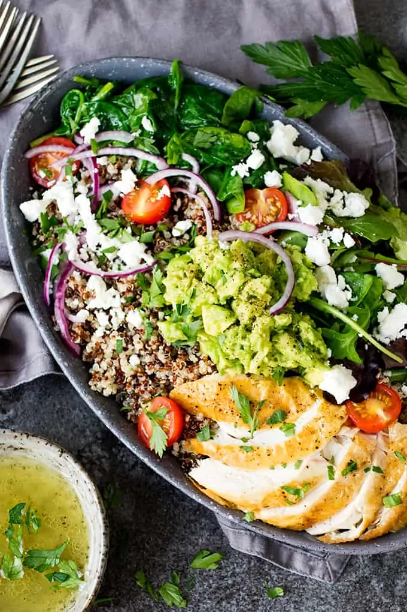
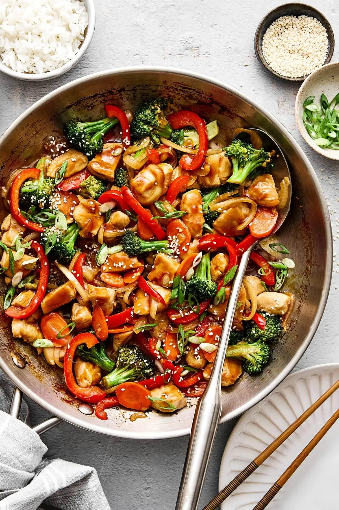

Grilled Salmon with Vegetables
Rich in omega-3 and paired with healthy greens.

Quinoa & Veggie Bowl
A nutrient-packed bowl with protein-rich quinoa and fresh veggies.

Stir-Fried Tofu with Brown Rice
A plant-based, high-protein meal with tasty flavors.